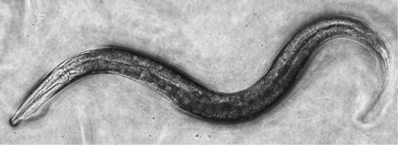
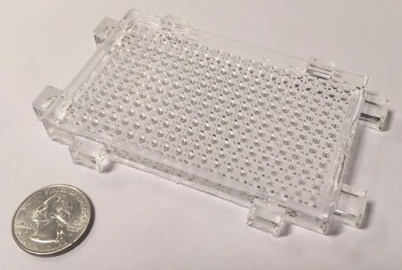

Research
Check out a video featured on Science Friday about my research. Thanks to Luke Groskin for filming!
I am interested in what makes us individuals. We traditionally think of differences in our genes as the source of our individuality, but even lab animals with identical genes (such as the roundworm C. elegans, shown below) exhibit profound differences in phenotypes such as behavior, stress resistance, and aging between individuals. Since we observe this variability in individuals with identical genes, this means that variability can arise from non-genomic sources, perhaps from differences or noise in gene expression levels or epigenetic (chromatin regulatory) mechanisms.
To locate the mechanisms of this extra-genomic variability requires tools suited to large-scale measurements of variable phenotypes. To date I have focused on addressing the question of behavioral variability, or how and why nervous systems with identical genotypes produce different behavioral outputs. The teleological answer is that they do it because they have to, that is, animals need to produce variable outputs in order to survive variable environments. The next question is what molecular mechanisms cause this variability.
To address these questions, I developed a method called The WorMotel (seen below) which we can use to record behavior over long time periods for up to 240 animals in parallel.I developed an image analysis software package to measure changes in movement for each animal over time, allowing us to quantitatively describe behavior for hundreds of animals over their entire lives at arbitrary temporal resolution. Using this method, we can describe differences in behavior during the short term (in response to changes in food levels, for example) and long term (stress resistance and aging) between each animal. I was able to use this method to delineate a neural circuit regulating locomotion behavior. I also found that the pattern of aging is different between individuals depending on their lifespan. See my publications for more information.
Measuring variability is of course only the first step in identifying what makes each animal unique. In the future I am interested in exploring differences in gene expression or chromatin state that explain mysteries of individual variability, for example why some animals live long whereas other die young or why some animals exhibit different behavioral responses to the same environmental change (e.g. food availability).